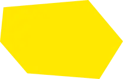

We are a Berlin-based communications agency specialising in helping companies and brands find their voice and position themselves. Whether it's brand building, identity sharpening, or communication strategy, we bring a fresh perspective to established structures, develop tailor- made communication solutions, and ensure that messages resonate. With over a decade of experience, we have honed our skills in giving brands their unmistakable identity and making them visible in the long term.
